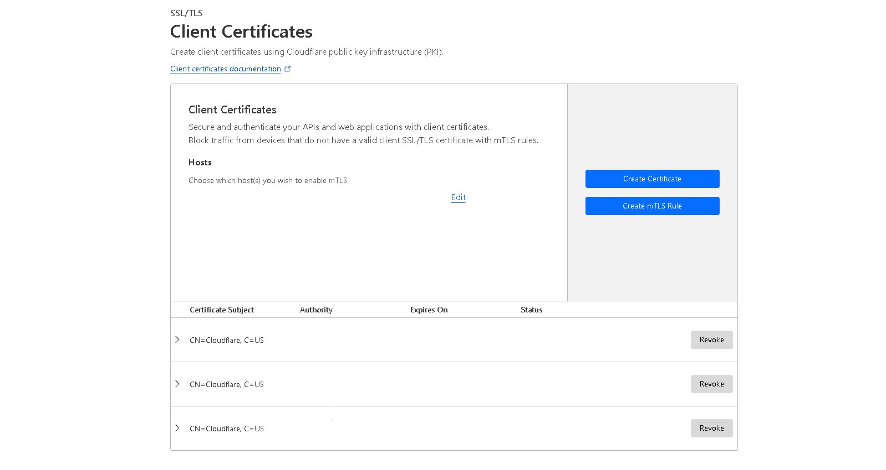

In the ever-evolving world of cybersecurity, maintaining the confidentiality and integrity of data is paramount. To address this, many organizations have turned to Mutual Transport Layer Security (mTLS) as a robust encryption method.
What is mTLS (Mutual TLS)?
mTLS is an advanced security protocol built upon the foundation of Transport Layer Security (TLS). TLS is used widely across the Internet for encrypted connections between a user's web browser and web servers so external parties can not spy on the communication.
mTLS goes further than normal TLS. The TLS handshake still occurs between the web server and the client, except the client also sends a certificate to the web server. The web server verifies the certificate, and the client is granted access. That is where mTLS gets its name, both parties verify each other's identity, thus having mutual authentication. mTLS prevents a multitude of attacks, including brute force attacks, phishing attacks, on-path attacks, and malicious API requests.
How to enable mTLS in Cloudflare
Before I start, a Cloudflare account setup with a domain name is required to follow this tutorial. There are many guides online which explain how to do that. Note: This may not work with domains from freenom.com because Cloudflare may not work with those domains.
- Open the dashboard for the domain in which you are configuring mTLS.
- Click on the SSL/TLS dropdown, then Client Certificates.
- Click on Create Certificate. 
- Create a certificate with your desired settings. The default settings work as well. Once you have your public and private keys, copy them into a private.key and certificate.pem files respectively.
- Download the Cloudflare certificate by going to this link: developers.cloudflare.com/cloudflare-one/connections/connect-devices/warp/user-side-certificates/install-cloudflare-cert. Download the .pem certificate.
- Open a Linux virtual machine (a container works as well) and upload the three keys to it. If you doing this natively on Linux, good job! If you are on Windows, WSL (Windows Subsystem for Linux), Docker, or a hypervisor like VirtualBox can help you with getting a virtual machine or container running.
-
Open the terminal, and run this command to update your packages and download openssl:
sudo apt update && sudo apt install openssl -y -
Once it is done, enter this command to generate the pfx certificate which you will upload to any device:
openssl pkcs12 -export -out <path to output file>.pfx -inkey <path to private key>.key -in <path to public key>.pem -certfile <path to cloudflare certificate>.pem - Now that you have the .pfx file, you can upload it to any device. On Windows, it is as easy as double-clicking the file and it will install for you. On iOS, you will need to Airdrop it from another device or run a web server on your Linux machine and download it. Either way, it will install directly into the operating system.
- Using the certificate is as easy as navigating to the website where mTLS is configured. You will have to manually select the certificate if you are on Windows, but Safari on iOS automatically selects the certificate. Note: Certificates only work in Safari in iOS.
- Back to the Cloudflare dashboard. Click on Edit and enter the hosts for which you wish to enable mTLS. Then click save.
- Click on Create mTLS Rule. This will bring you to the page where you can create a rule in your WAF. If you want to make one from scratch, the default is
(not cf.tls_client_auth.cert_verified and http.request.uri.path in {"<list of host names>"}). However, I have configured my WAF to allow requests which match any of my private domains and have a certificate skip the rest of the firewall rules and security checks. My rule looks like this:(http.host in {"<list of host names>""} and cf.tls_client_auth.cert_verified) - It may take time for your certificate to be registered in Cloudflare or for your device to recognize it. In my experience, it worked after 24 hours.
- Congratulations! You have configured mTLS using Cloudflare on your domain. You are one step closer to being more secure.
Conclusion
Mutual Transport Layer Security (mTLS) is a robust security protocol that ensures two-way authentication between clients and servers. Cloudflare mTLS takes this concept and simplifies its implementation for organizations looking to enhance their network security. If you're considering mTLS for your organization, Cloudflare's solution is worth exploring. With its user-friendly interface and powerful features, you can enhance your network security and protect sensitive data with confidence.
Sources
https://www.cloudflare.com/learning/access-management/what-is-mutual-tls/